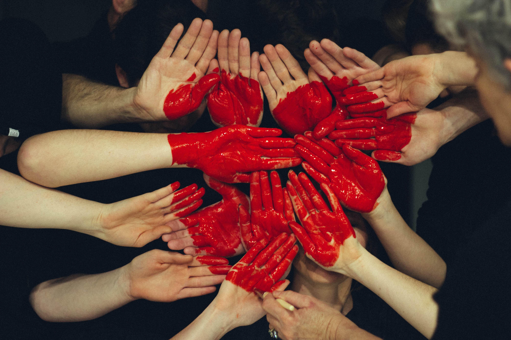

who CAN DONATEThe mission of WIN is that not a single person should suffer/die due to non availability of blood.

Who Can Give Blood?
Who can give blood?
Most people can give blood if they are in good health. There are some basic requirements one need to fulfill in order to become a blood donor. Below are some basic eligibility guidelines:
Age
You are aged between 18 and 65.
In some countries national legislation permits 16–17 year-olds to donate provided that they fulfil the physical and hematological criteria required and that appropriate consent is obtained.
In some countries, regular donors over the age of 65 may be accepted at the discretion of the responsible physician. The upper age limit in some countries are 60.
Weight
You weigh at least 50 kg.
In some countries, donors of whole blood donations should weigh at least 45 kg to donate 350 ml ± 10%.
Health
You must be in good health at the time you donate.
You cannot donate if you have a cold, flu, sore throat, cold sore, stomach bug or any other infection.
If you have recently had a tattoo or body piercing you cannot donate for 6 months from the date of the procedure. If the body piercing was performed by a registered health professional and any inflammation has settled completely, you can donate blood after 12 hours.
If you have visited the dentist for a minor procedure you must wait 24 hours before donating; for major work wait a month.
You must not donate blood If you do not meet the minimum haemoglobin level for blood donation:
A test will be administered at the donation site. In many countries, a haemoglobin level of not less than 12.0 g/dl for females and not less than 13.0 g/dl for males as the threshold.
Travel
Travel to areas where mosquito-borne infections are endemic, e.g. malaria, dengue and Zika virus infections, may result in a temporary deferral.
Many countries also implemented the policy to defer blood donors with a history of travel or residence for defined cumulative exposure periods in specified countries or areas, as a measure to reduce the risk of transmitting variant Creutzfeldt-Jakob Disease (vCJD) by blood transfusion.
Who should not Give Blood?
If you engaged in “at risk” sexual activity in the past 12 months
Individuals with behaviours below will be deferred permanently:
Have ever had a positive test for HIV (AIDS virus)
Have ever injected recreational drugs.
In the national blood donor selection guidelines, there are more behavior eligibility criteria. Criteria could be different in different countries.
Pregnancy and breastfeeding
Following pregnancy, the deferral period should last as many months as the duration of the pregnancy.
It is not advisable to donate blood while breast-feeding. Following childbirth, the deferral period is at least 9 months (as for pregnancy) and until 3 months after your baby is significantly weaned (i.e. getting most of his/her nutrition from solids or bottle feeding).
More information on eligibility to donate
National eligibility guidelines must be followed when people donate blood in the blood service in specific countries. To find out whether any health conditions, medications, professions or travel history to could affect your ability to give blood, please search for detailed information in the national/local blood services.